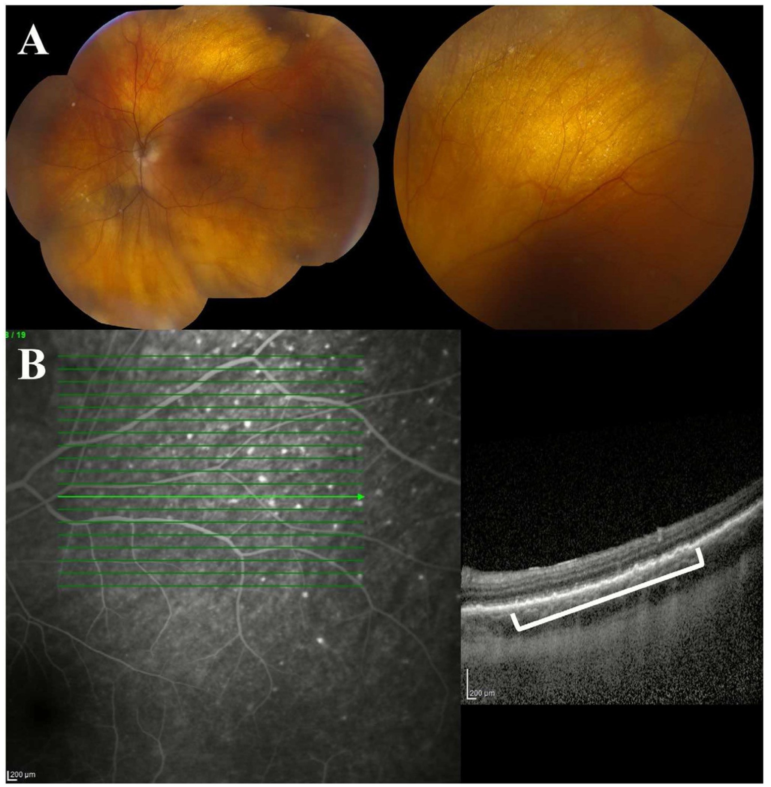
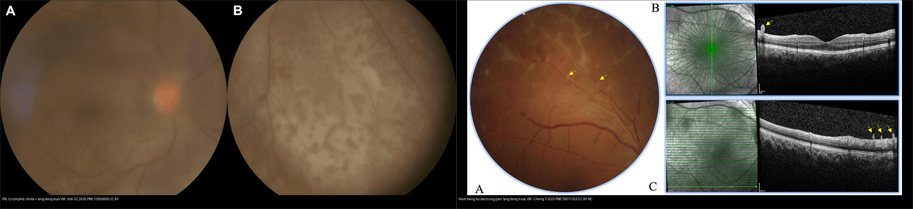
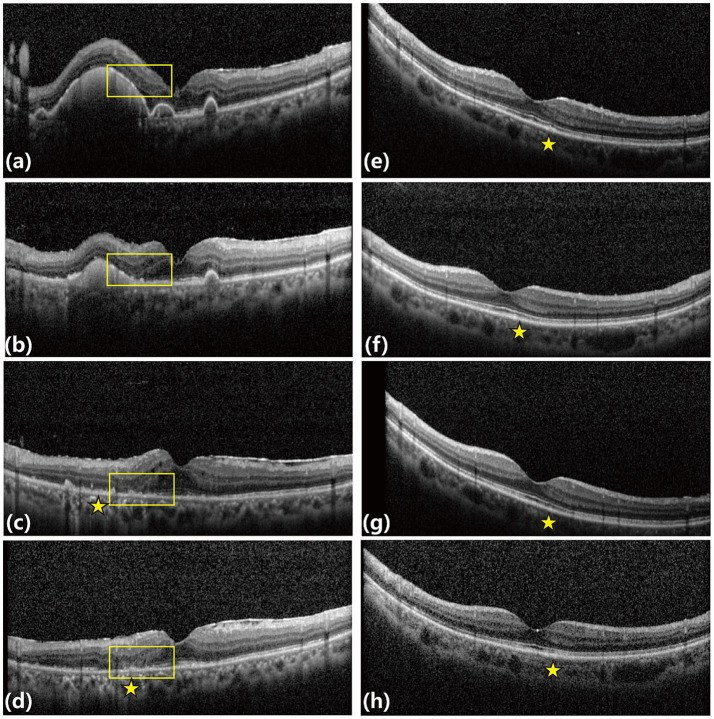
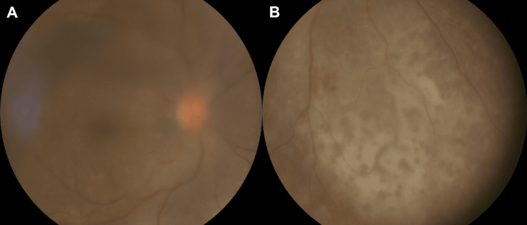
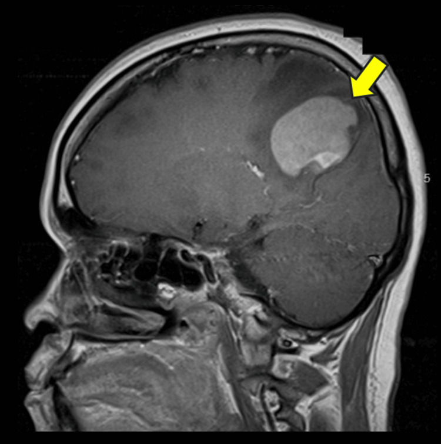
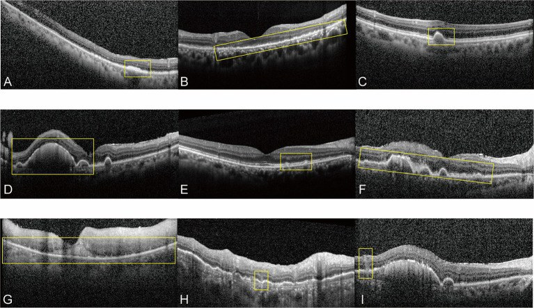
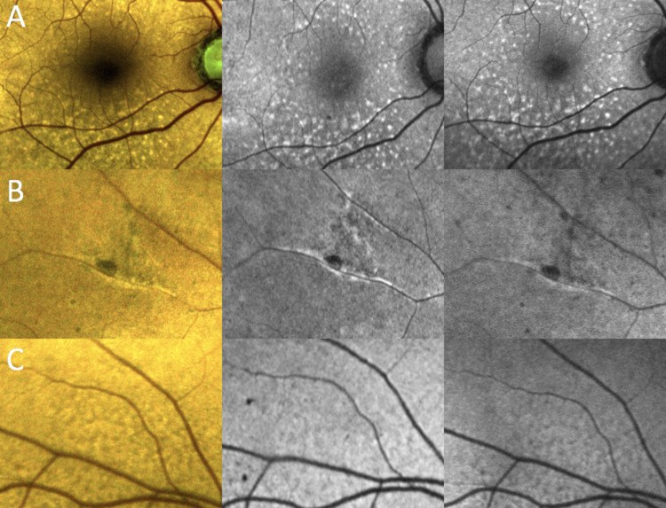
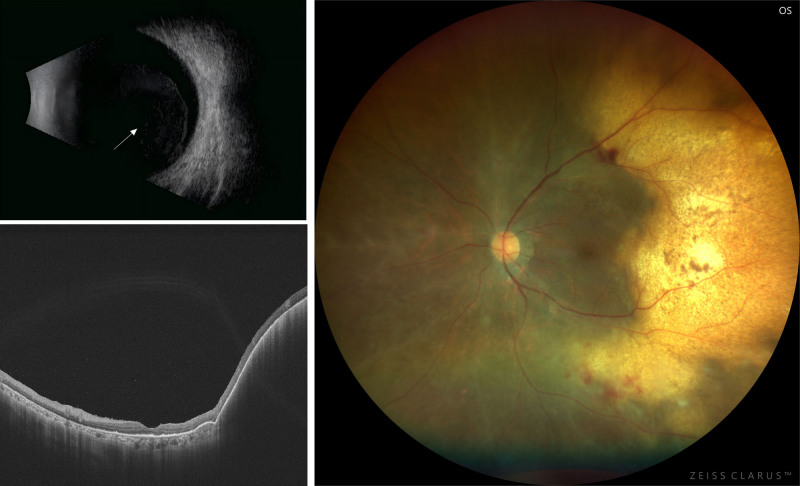

462 — U lympho nội nhãn (primary vitreoretinal lymphoma, PVRL) vs viêm màng bồ đào giả danh (masquerade uveitis): IL-10/MYD88 trong dịch kính + PET-CT / Primary vitreoretinal lymphoma vs masquerade uveitis
Tags: pattern:u-lympho-noi-nhan pattern:lang-dong-duoi-RPE pattern:viet-dich-kinh vung:vong-mac vung:than-kinh-trung-uong score:IL-10-IL-6 protocol:sinh-thiet-dich-kinh protocol:OCT protocol:FAF protocol:MRI-nao-PET-CT
Mức chắc chắn (certainty): tổng hợp y văn (literature synthesis) — nhóm tự biên từ y văn mở (Blood Sci 2025 CC BY 4.0; Clin Exp Ophthalmol 2026 CC BY 4.0; Front Med 2026 CC BY 4.0; Cureus 2026 CC BY 4.0; Ophthalmol Ther 2026 CC BY-NC 4.0; Ophthalmol Ther 2023 CC BY-NC 4.0), chưa gắn một ca nguyên văn đơn lẻ xuyên suốt.
Vì sao bài này quan trọng: bài 451 (biểu hiện mắt của bệnh hệ thống) và 452/454/459 (CMV/ARN ở người suy giảm miễn dịch) đã nhắc "lymphoma nội nhãn là masquerade" nhưng chỉ một dòng. Trong thực hành đáy mắt, đây là chẩn đoán bị bỏ sót nhiều nhất: hơn 60% ca bị chẩn đoán sai, phần lớn là viêm màng bồ đào (uveitis), và corticoid làm tổn thương thoái triển tạm thời → làm mất tế bào ung thư → sinh thiết âm tính giả. Hệ quả không chỉ là mù mắt: 1/3 ca đã có tổn thương thần kinh trung ương (CNS) lúc chẩn đoán, 42–92% tiến triển thành u lympho não (PCNSL) trong 8–29 tháng — bệnh cảnh đe dọa tính mạng, cần thầy thuốc hình ảnh nhận diện trước khi có kết quả mô bệnh.
1. Tổng quan — vì sao tế bào lympho "đọng" dưới biểu mô sắc tố và tại sao hình ảnh nhỏ lại có ý nghĩa lớn
- U lympho nội nhãn tiên phát (primary vitreoretinal lymphoma, PVRL) là u lympho không Hodgkin tế bào B lớn lan tỏa (diffuse large B-cell lymphoma, DLBCL) — chiếm ~95% PVRL — khu trú trong mắt, và được coi là thể của u lympho hệ thần kinh trung ương tiên phát (primary CNS lymphoma, PCNSL) vì cùng nguồn gốc miễn dịch đặc quyền (immune privilege: mắt–não–tinh hoàn) và cùng đột biến MYD88 L265P.
- Cơ chế hình ảnh (TẠI SAO): tế bào lympho ác xâm nhập dịch kính → võng mạc → khoang dưới biểu mô sắc tố (sub-RPE) và quanh mạch. Vì tế bào u bám chặt khoang dưới RPE, mắt thấy các ổ vàng–kem sâu dưới võng mạc; trên OCT các tế bào này tạo khối tăng phản hồi (hyperreflective) dưới RPE = dày RPE/bong RPE khu trú (PED); trong dịch kính chúng tạo đục dịch kính mờ, ô "quả cầu tuyết/aurora borealis"; còn thoát tế bào ra dịch kính gây phản ứng viêm rất nghèo (đặc trưng: ít viêm so với hoại tử) — ngược với ARN/viêm nhiễm.
- Dịch tễ & tiên lượng nằm lòng:
- Tỉ lệ mắc 0,23/1.000.000 dân/năm ở Mỹ (điều chỉnh tuổi), đang tăng trong 3 thập niên; tuổi trung vị khi chẩn đoán > 63 tuổi, > 20% bệnh nhân > 80 tuổi.
- Hai mắt 50–80% (thường không đối xứng); chỉ ~20–50% một mắt.
- CNS lúc chẩn đoán ~1/3; 42–92% tiến triển PCNSL trong 8–29 tháng; ngược lại 15–25% bệnh nhân PCNSL có thâm nhiễm mắt.
- Chẩn đoán sai tới ~64%; trễ chẩn đoán 8–21 tháng (một số loạt tới 12–24 tháng).
- Ngưỡng định lượng phải nhớ (4 cửa Argon):
- Cytokine dịch nội nhãn — chốt phân biệt: IL-10 > 50 pg/mL trong dịch tiền phòng (aqueous) (độ nhạy 89%, độ đặc hiệu 93%) và IL-10 > 400 pg/mL trong dịch kính (vitreous) (độ nhạy 80%, độ đặc hiệu 99%); tỉ lệ IL-10 : IL-6 > 1 gợi ý u lympho còn < 1 gợi ý viêm màng bồ đào. (IL-10 do tế bào B ác tiết, IL-6 do tế bào viêm tiết.)
- Di truyền: MYD88 L265P ~69–88% PVRL (nhiều hơn hẳn CD79B ~35%); NGS dịch kính có độ nhạy
0,85; chỉ cần **4 tế bào** cho PCR MYD88 (không như tế bào học cần nhiều tế bào nguyên vẹn). - Tế bào học dịch kính là tiêu chuẩn vàng nhưng độ nhạy chỉ 45–81% — âm tính giả 30–45%.
- OCT: ổ dưới RPE (sub-RPE deposits) là dấu hay gặp nhất — 92,1%; thể dày RPE 45,7%; ổ dưới võng mạc 65,8%; ổ trong võng mạc 23,7%. Mô hình dự đoán đa biến đạt AUC 0,929 (Se 92,9%, Sp 91,7%).
- Độ đặc hiệu cao (rất ít gặp ở uveitis): tế bào dịch kính Se 93%; ổ trước võng mạc (preretinal) Sp 92,5%; thâm nhiễm lan trong võng mạc (diffuse intraretinal) Sp 100%; kiểu "dọc đầy đủ/dọc hỗn hợp" (vertical complete/mixed) Sp 100%; diện thâm nhiễm dưới võng mạc ~81%; "leopard spot" 9–21%; "aurora borealis" ~34%.
2. Mẫu hình + chẩn đoán phân biệt theo vị trí (gamut)
Câu hỏi lọc: "Viêm màng bồ đào ở người lớn tuổi, hai mắt, mạn tính, đáp ứng corticoid một phần rồi tái phát, thị lực giảm không tương xứng — có phải u lympho không?" → nếu có ổ vàng sâu dưới RPE + đục dịch kính ít viêm thì phải loại trừ PVRL.
Gamut theo vị trí tổn thương:
- Dịch kính (vitreous): PVRL (đục mờ, ô "aurora borealis", viêm nghèo) vs viêm màng bồ đào trung gian (intermediate uveitis)/pars planitis (viêm rõ, "snowbank") vs viêm nội nhãn nấm (Candida) vs viêm nội nhãn do vi khuẩn (mủ, đau) vs u lympho T/NK (hiếm).
- Dưới RPE (sub-RPE)/võng mạc (retina): PVRL (ổ vàng–kem sub-RPE, dày/bong RPE) vs bệnh hắc võng mạc đa ổ (MFC) vs bệnh giang mai hậu nhãn (placoid) vs lao hắc võng mạc vs loạn dưỡng RPE.
- Hắc mạc (choroid): u lympho hắc mạc (choroidal lymphoma) — khối/dày hắc mạc, trễ chẩn đoán tới 2 năm; vs di căn, u hắc mạc (melanoma), hemangioma.
- Cực sau/đĩa thị & thần kinh: thâm nhiễm đĩa thị–thần kinh thị; vs viêm thần kinh thị, bệnh ác tính hệ thống khác.
- Nhóm giả danh khác (masquerade): amyloidosis, di căn nội nhãn, u hắc mạc, phản ứng dị vật/IOFB cũ, hoại tử nội nhãn (retinoblastoma ở trẻ), nhiễm virus (CMV, ARN).
3. Bảng so sánh phân biệt (ma trận đối chiếu)
| Thực thể (entity) | Hình ảnh điển hình (fundus / OCT / đa phương thức) | Chốt vào (rule-in) | Chốt loại (rule-out) | Gợi ý xác nhận |
|---|---|---|---|---|
| PVRL (u lympho nội nhãn) | Ổ vàng–kem sâu dưới RPE hai bên, đục dịch kính ít viêm, dày RPE/bong RPE khu trú; OCT ổ tăng phản hồi dưới RPE (92,1%) | Tuổi > 60 + hai mắt + tổn thương dưới RPE + đáp ứng corticoid một phần rồi tái phát | Đục dịch kính nhiều viêm + đau đỏ + nhạy corticoid → uveitis | IL-10 dịch kính > 400 pg/mL (Sp 99%), IL-10:IL-6 > 1, MYD88 L265P; sinh thiết dịch kính |
| Viêm màng bồ đào trung gian (pars planitis) | Đục dịch kính dày, "snowbank" phần dưới, ổ trước võng mạc mờ; OCT phù hoàng điểm | Trẻ hơn, một/hai mắt, viêm nghẽn rõ, IL-10:IL-6 < 1 | Ổ vàng sâu dưới RPE rải rác → nghĩ PVRL | IL-10 thấp; tổn thương con thoi đáp ứng corticoid |
| Bệnh hắc võng mạc đa ổ (MFC) | Đốm vàng nhỏ tầng nông/ngoài, sẹo tăng sắc tố, VN sẹo | Người trẻ, cận thị, sẹo tăng sắc tố, không u | Tổ đặc dưới RPE dày lên → làm sinh thiết | OCT: tổn thương nông, không tạo khối dưới RPE |
| Bệnh giang mai hậu nhãn (placoid) | Mảng vàng nhạt dẹt cực sau, OCT "vertical" giống PVRL | RPR/TPHA dương, đáp ứng penicillin | Huyết thanh giang mai âm + hai mắt tái phát dưới corticoid → nghi PVRL | Huyết thanh giang mai (RPR, TPHA); tổn thương đáp ứng kháng sinh |
| U lympho hắc mạc | Dày hắc mạc lan/khu trú, có thể rất kín đáo, không đau | Dày hắc mạc hai bên ở người già + u lympho toàn thân | Hắc mạc bình thường/không dày → ít nghĩ hắc mạc | Siêu âm 10–20 MHz, MRI hốc mắt; theo dõi trễ tới 2 năm |
| Nấm nội nhãn (Candida) | Nốt trắng "fluff-ball" nhô vào dịch kính, nhiều ổ | Nhiễm nấm huyết/catheter + dịch kính đục rõ | Tổ dưới RPE rải rác → PVRL | Cấy máu, PCR nội nhãn (bài 451) |
| Amyloidosis/khối nội nhãn khác | Đục dịch kính dai dẳng, mảng trắng | Bệnh hệ thống + sinh thiết mô khác | Bệnh cảnh đơn độc + IL-10 cao → PVRL | Sinh thiết toàn thân trước |

Trên: đáy mắt màu — các ổ kem–vàng nằm sâu dưới võng mạc, khó thấy vì kín đáo. Dưới: OCT — khối tăng phản hồi dưới RPE (khung trắng) làm dày/bong RPE, tương ứng vị trí ổ vàng trên ảnh màu. Đây là dấu hay gặp nhất (92,1%) và là lý do OCT là bước sàng lọc bắt buộc khi nghi PVRL. Nguồn: Ibrahim A et al., Clin Exp Ophthalmol 2026 (PMC12863966) Fig. 5, CC BY 4.0.
Trái: PVRL — đục dịch kính dày (3+ haze, che chi tiết võng mạc) kèm dải thâm nhiễm dưới võng mạc dẹt, loang lổ dọc cung mạch mũi–dưới (Goh SZ et al., Cureus 2026, PMC13050609, Fig. 1, CC BY 4.0). Phải: viêm màng bồ đào trung gian không rõ nguyên nhân — cũng có ổ trước võng mạc xám–trắng (mũi tên vàng) ở người 49 tuổi (Cheng Y et al., Ophthalmol Ther 2023, PMC10011253, Fig. 1, CC BY-NC 4.0). Vì dấu "ổ trước võng mạc" xuất hiện ở cả hai, phải phối hợp bối cảnh tuổi + đa phương thức + IL-10/IL-6 + MYD88, không chốt bằng một dấu hiệu. Ảnh ghép letterbox.4. Protocol chẩn đoán + theo dõi + sơ đồ quyết định
Bước 1 — Nghi ngờ trên hình ảnh (không xâm lấn):
- OCT (bắt buộc): tìm ổ tăng phản hồi dưới RPE (dày RPE/BED), ổ dưới võng mạc, ổ trong võng mạc, dày RPE lan, mất lớp ellipsoid (EZ); đo chiều rộng tổn thương (µm) để theo dõi.
- Chụp màu góc rộng (widefield) + FAF (kể cả FAF mã hóa màu): ổ tăng tự huỳnh quang dưới RPE; FAF bất thường phân biệt tổn thương hoạt động vs không hoạt động (Se 68,75%, Sp 100%).
- Siêu âm B-scan (10–20 MHz): đục dịch kính lan tỏa, dày hắc mạc, loại u.
- CT/MRI hốc mắt: dày hắc mạc/củng mạc, tổn thương trong nhãn; MRI não + gadolinium và/hoặc PET/CT toàn thân để tìm PCNSL/ổ ngoài mắt (~1/3 đã có CNS lúc chẩn đoán).
Bước 2 — Lấy mẫu nội nhãn (chẩn đoán xác định):
- Cắt dịch kính chẩn đoán (diagnostic pars plana vitrectomy): lấy dịch kính không pha loãng trước, rồi dịch pha loãng; chuyển ngay, không cố định (tế bào lympho mỏng manh, dễ ly giải).
- Gửi đồng thời 4 nhóm: (1) tế bào học/khối tế bào, (2) miễn dịch tế bào (CD20, CD79a, PAX5, Ki-67)/dòng chảy tế bào, (3) sinh học phân tử (IgH PCR, MYD88 L265P, CD79B, NGS), (4) cytokine (IL-10, IL-6; tỉ lệ > 1).
- Nếu âm tính mà vẫn nghi ngờ: sinh thiết lại (giá trị tăng theo số lần) — không bỏ sót vì một lần âm. Cân nhắc sinh thiết hắc võng mạc (chorioretinal biopsy) khi tổn thương khu trú.
Bước 3 — Điều trị & theo dõi (khung):
- Tại mắt: methotrexate (MTX) nội nhãn ± rituximab nội nhãn; xạ trị mắt (EBRT) 35–40 Gy khi hai mắt/tổn thương đe dọa, nhưng không ngăn tái phát CNS.
- Toàn thân: MTX liều cao tĩnh mạch ± rituximab, phối hợp hóa trị; ghép tế bào gốc tự thân (ASCT) cho tái phát/kháng trị; rituximab–lenalidomide (R2) là lựa chọn mới.
- Số liệu để tư vấn: MTX nội nhãn đơn thuần đạt CHR ~64,6% (trung vị 3 mũi, 7 mắt tái phát trong loạt 48 mắt); phác đồ R-MPV + xạ toàn não liều giảm (rdWBRT) → tiến triển CNS 4 năm chỉ 10,0%, PFS 4 năm 72,7%; sống không u lympho CNS 2 năm ghép MTX nội nhãn + HD-MTX 58,3% so với 37,5% khi chỉ MTX nội nhãn; R2 đạt CR 35% ở ca tái phát/kháng trị.
- Theo dõi: khám mắt + OCT/FAF định kỳ, MRI não/PET theo lịch (nguy cơ CNS tồn tại nhiều năm) — "mắt lành" không đồng nghĩa "não lành".

Hai ca (cột trái và cột phải) được chụp OCT dọc thời gian quá trình điều trị MTX nội nhãn: các ổ tăng phản hồi dưới RPE/trong–dưới võng mạc (khung vàng, ngôi sao) thoái triển và tái cấu trúc võng mạc sau điều trị. Đây là cách theo dõi khách quan đáp ứng — thay đổi "trước–sau" mới là chốt, không đọc một ảnh đơn. Nguồn: Wang X et al., Front Med 2026 (PMC13318726) Fig. 4, CC BY 4.0.flowchart TD
A[Nguoi lon tuoi: viem dich kinh hai mat man tinh, giam thi luc khong tuong xung] --> B[OCT + FAF goc rong + sieu am B-scan]
B --> C{Co o tang phan hoi DUOI RPE / dang RPE?}
C -->|Khong| D[Can nhac uveitis: dieu tri theo nguyen nhan, theo doi]
C -->|Co| E[Loai tru giang mai - lao - CMV bang huyet thanh/PCR]
E --> F[MRI nao + gadolinium + PET-CT toan than]
F --> G[Cat dich kinh chan doan: dich kinh KHONG pha loang, chuyen NGAY]
G --> H[Tế bào học + miễn dịch + MYD88/IgH + IL-10/IL-6]
H --> I{IL-10 kinh > 400 pg/mL hoac ti le IL-10:IL-6 > 1 hoac MYD88 duong?}
I -->|Co| J[PVRL - hoi chan huyet hoc: MTX noi nhan + HD-MTX toan than]
I -->|Khong ro| K[Sinh thiet lai / sinh thiet hac-vong mac]
J --> L[Theo doi dinh ky mat + MRI nao/PET - nguy co PCNSL 42-92% trong 8-29 thang]
K --> H
5. Biến thể bình thường và cạm bẫy
- Corticoid trước sinh thiết = bẫy chí mạng: bệnh nhân thường được chẩn đoán "viêm màng bồ đào" và điều trị corticoid, tổn thương thoái triển tạm thời nhưng tế bào u ly giải → sinh thiết âm tính giả. Quy tắc: nghi PVRL thì lấy mẫu TRƯỚC hoặc ngừng corticoid hợp lý và gửi cytokine + MYD88 song song.
- Đục dịch kính ít viêm bị đọc là "viêm nhẹ": PVRL có phản ứng viêm nghèo nên dễ bị coi nhẹ; điều bất thường là thị lực giảm nặng hơn mức đục dịch kính.
- Ổ dưới RPE rất kín đáo: nếu không chụp OCT/FAF, bỏ sót dấu hay gặp nhất (92,1%); ổ có thể chỉ dày RPE khu trú nhìn như "drusen".
- Tế bào học âm không loại trừ: âm tính giả 30–45% do quá ít tế bào, tế bào dễ vỡ; PCR MYD88 chỉ cần ~4 tế bào → luôn phối hợp. Sinh thiết lại làm tăng độ nhạy.
- Phù hoàng điểm (CME) không loại trừ PVRL: CME gặp ở cả uveitis lẫn PVRL — đừng vì "có CME" mà chốt lành.
- Dấu hiệu đơn độc không đủ: ổ trước võng mạc và kiểu OCT "vertical" có độ đặc hiệu cao nhưng vẫn gặp ở uveitis giang mai/MFC (xem ảnh ghép) → luôn dùng bối cảnh + cytokine + di truyền.
- IL-10 tăng cũng gặp trong một số viêm/nhiễm trùng: dùng tỉ lệ IL-10:IL-6 và ngưỡng theo dịch (tiền phòng 50 pg/mL vs dịch kính 400 pg/mL) — không dùng lẫn ngưỡng.
- U lympho hắc mạc trễ chẩn đoán tới 2 năm: dày hắc mạc đơn độc, kín đáo → cần siêu âm + MRI và nghi ngờ khi có u lympho hệ thống.
6. Tự lượng giá — Blind Quiz
Ca 1 — Nam 62 tuổi, nhìn mờ hai mắt 4 tháng, được điều trị "viêm màng bồ đào" bằng corticoid, đỡ rồi tái phát. Ảnh đáy mắt góc rộng mắt phải:

- Hỏi: mô tả 2 thành phần bất thường? Vì sao không chốt là viêm màng bồ đào? Dấu hiệu nào buộc phải sinh thiết dịch kính?
Bấm để hiện đáp án (findings + chẩn đoán)
- Dấu hiệu (findings): A — đục dịch kính dày (3+ haze) che chi tiết võng mạc; B — nhiều ổ dẹt, loang lổ, giảm sắc tố dưới võng mạc dọc cung mạch mũi–dưới.
- Chẩn đoán (diagnosis): PVRL (u lympho tế bào B lớn) biểu hiện như giả viêm màng bồ đào ở người lớn tuổi, đáp ứng corticoid một phần rồi tái phát. Ca gốc: sinh thiết dịch kính ít tế bào nhưng miễn dịch tế bào xác nhận lymphoma tế bào B lớn (CD20, CD79a, PAX5).
- Vì sao buộc sinh thiết: ổ dưới võng mạc + người lớn tuổi + tái phát sau corticoid = loại trừ PVRL; kết hợp IL-10:IL-6 > 1 và MYD88 L265P để tránh âm tính giả.
- Nguồn ảnh: Goh SZ et al., Cureus 2026 (PMC13050609) Fig. 1, CC BY 4.0.
Ca 2 — Cùng bệnh nhân Ca 1, được chụp MRI não sau tiêm gadolinium:

- Hỏi: mô tả khối? Vì sao phải chụp MRI não ngay khi nghi PVRL?
Bấm để hiện đáp án (findings + chẩn đoán)
- Dấu hiệu (findings): khối trong trục (intra-axial), ngấm thuốc mạnh, đồng nhất, ở thùy đỉnh–chẩm phải cạnh xoang dọc trên (mũi tên vàng), ranh giới rõ, ít phù quanh u — kiểu điển hình của u lympho não (PCNSL).
- Chẩn đoán (diagnosis): PCNSL có thâm nhiễm mắt (PVRL) — chẩn đoán toàn thân; ~1/3 ca PVRL đã có CNS lúc chẩn đoán, 42–92% tiến triển trong 8–29 tháng.
- Vì sao chụp ngay: quyết định điều trị toàn thân (HD-MTX/ASCT/rdWBRT) chứ không chỉ điều trị tại mắt; bỏ sót CNS = sai phác đồ.
- Nguồn ảnh: Goh SZ et al. (PMC13050609) Fig. 2, CC BY 4.0.
Ca 3 — Bệnh nhân PVRL, OCT hoàng điểm nhiều vị trí: dấu nào hay gặp nhất?

- Hỏi: phân loại các kiểu tổn thương trên OCT? Kiểu nào hay gặp nhất và kiểu nào đặc hiệu nhất?
Bấm để hiện đáp án (findings + chẩn đoán)
- Dấu hiệu (findings): các khối tăng phản hồi (hyperreflective) theo khoang giải phẫu — (A–E) ổ dưới RPE (dày RPE khu trú/lan, bong RPE nông và lớn), (F–H) ổ trước võng mạc và trong/dưới võng mạc, (I) tổn thương hỗn hợp/ở mép.
- Số liệu: ổ dưới RPE hay gặp nhất — 92,1% (thể dày RPE 45,7%); ổ dưới võng mạc 65,8%, trong võng mạc 23,7%; thâm nhiễm lan trong võng mạc đặc hiệu 100%; "dọc đầy đủ/hỗn hợp" đặc hiệu 100%.
- Ứng dụng: OCT là công cụ sàng lọc không xâm lấn; mô hình kết hợp đạt AUC 0,929 (Se 92,9%, Sp 91,7%) → nâng nghi ngờ trước sinh thiết, không thay thế mô bệnh.
- Nguồn ảnh: Wang X et al., Front Med 2026 (PMC13318726) Fig. 1, CC BY 4.0.
Ca 4 — Bệnh nhân PVRL, FAF mã hóa màu (colour-coded):

- Hỏi: 3 cột ảnh là gì? Hàng A–C khác nhau thế nào? FAF giúp gì cho "hoạt động vs không hoạt động"?
Bấm để hiện đáp án (findings + chẩn đoán)
- Cột: trái = FAF mã hóa màu (colour-coded), giữa = FAF xanh lá (green), phải = FAF xanh dương (blue).
- Hàng: A — ổ tăng tự huỳnh quang dưới RPE (chấm sáng rải rác); B — cụm/chùm tăng tự huỳnh quang (clumps) phối hợp teo; C — teo RPE (nền lốm đốm, giảm tự huỳnh quang).
- Ý nghĩa: FAF giúp phát hiện tổn thương RPE kín đáo và phân biệt hoạt động vs không hoạt động — FAF bất thường phân biệt 2 trạng thái với Se 68,75%, Sp 100%.
- Nguồn ảnh: Marchese A et al., Ophthalmol Ther 2026 (PMC13315427) Fig. 2, CC BY-NC 4.0 — giữ nguyên bản, không crop/ghép.
Ca 5 — Hai bệnh nhân cùng có "ổ trước võng mạc". Ca nào là u lympho?
- Hỏi: vì sao không thể chốt chỉ bằng dấu "ổ trước võng mạc"? Cần bổ sung gì để phân biệt?
Bấm để hiện đáp án (findings + chẩn đoán)
- Trái = PVRL (62 tuổi, hai mắt, tổn thương dưới võng mạc + dưới RPE, đục dịch kính, tái phát sau corticoid).
- Phải = viêm màng bồ đào trung gian (49 tuổi) — cũng có ổ trước võng mạc xám–trắng với OCT tăng phản hồi trên bề mặt võng mạc. Vì "ổ trước võng mạc" không phải dấu riêng của u lympho, cần bối cảnh (tuổi, hai mắt, không đáp ứng corticoid) + IL-10 dịch kính > 400 pg/mL/tỉ lệ IL-10:IL-6 > 1 + MYD88 L265P + mô bệnh.
- Nguồn: ghép Fig. 1 (Goh SZ et al., Cureus 2026, PMC13050609, CC BY 4.0) và Fig. 1 (Cheng Y et al., Ophthalmol Ther 2023, PMC10011253, CC BY-NC 4.0).
Ca 6 — Nữ 75 tuổi, chẩn đoán PVRL: đa phương thức siêu âm B + OCT + đáy mắt.

- Hỏi: mỗi ô ảnh cho thấy gì? Tổn thương nào (ô phải) gợi ý u lympho hơn là viêm?
Bấm để hiện đáp án (findings + chẩn đoán)
- Ô trái–trên (siêu âm B-scan): đục dịch kính lan tỏa dạng "hạt" (mũi tên trắng).
- Ô trái–dưới (OCT): bong RPE dạng vòm liên tục (confluent RPE detachment) ở vùng thái dương — dấu gợi ý mạnh PVRL.
- Ô phải (fundus mắt trái): các ổ mảng vàng–kem dưới võng mạc lan rộng quanh hoàng điểm, phối hợp xuất tiết — tương ứng ổ dưới RPE.
- Chẩn đoán: PVRL trên đa phương thức; xác định bằng sinh thiết dịch kính + cytokine/di truyền.
- Nguồn ảnh: Wang SY et al., Blood Sci 2025 (PMC12047895) Fig. 1, CC BY 4.0.
Bài liên quan chéo
- 400 – Tổng quan Mắt & thị giác
- 451 – Biểu hiện mắt của bệnh hệ thống (sarcoid/GPA/IgG4/lymphoma)
- 452 – Hoại tử võng mạc cấp (ARN) & CMV retinitis
- 454 – Viêm võng mạc–màng mạch ở người suy giảm miễn dịch không HIV (masquerade nhiễm trùng)
- 455 – Viêm mạch hệ thống khác ở mắt: Behçet & lupus (viêm màng bồ đào giả danh)
- 411 – Siêu âm nhãn cầu (khi không thấy đáy mắt)
Ảnh
462_pvrl-fundus_WF_PMC13050609-Fig1-CCBY.jpg— Goh SZ et al., Cureus 2026 (PMCID: PMC13050609) Fig. 1, CC BY 4.0.462_pvrl-nao-MRI_PMC13050609-Fig2-CCBY.jpg— Goh SZ et al. (PMC13050609) Fig. 2, CC BY 4.0.462_pvrl-OCT-dac-diem_PMC13318726-Fig1-CCBY.jpg— Wang X et al., Front Med 2026 (PMCID: PMC13318726) Fig. 1, CC BY 4.0.462_pvrl-OCT-theo-doi_PMC13318726-Fig4-CCBY.jpg— Wang X et al. (PMC13318726) Fig. 4, CC BY 4.0.462_pvrl-lang-dong-duoi-RPE_PMC12863966-Fig5-CCBY.jpg— Ibrahim A et al., Clin Exp Ophthalmol 2026 (PMCID: PMC12863966) Fig. 5, CC BY 4.0.462_pvrl-FAF-mau_PMC13315427-Fig2-CCBYNC.jpg— Marchese A et al., Ophthalmol Ther 2026 (PMCID: PMC13315427) Fig. 2, CC BY-NC 4.0 (giữ nguyên bản).462_pvrl-da-phuong-thuc_PMC12047895-Fig1-CCBY.jpg— Wang SY et al., Blood Sci 2025 (PMCID: PMC12047895) Fig. 1, CC BY 4.0.composite_vrl-vs-viem-mang-bu-dao.jpg— ghép Fig. 1 (PMC13050609, CC BY) + Fig. 1 (PMC10011253, Cheng Y et al., Ophthalmol Ther 2023, CC BY-NC 4.0) bằngtools/make_composite.py.- Chi tiết giấy phép từng ảnh trong
images/CREDITS.md. AuntMinnie/Retina Image Bank: chỉ dẫn link, không tải.
Không dùng để chẩn đoán độc lập khi chưa có người hướng dẫn.